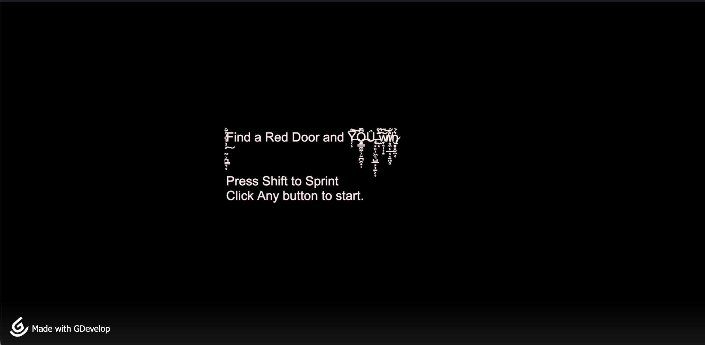

SEP 11 Freedom Project was about how we got to choose our own topic and create a project based on it using skills learned in class.
I chose to create a horror game using GDevelop. I designed the game to include a full map, enemy AI, a sprint and stamina system, a health bar, and a Game Over screen.
The purpose of this project was to explore something I was interested in and apply what I learned in engineering and game design. This project took a long time to build because I had to design, test, and improve different game mechanics.
Before building the game, I created a plan to organize my ideas and map layout. This helped me understand what features I wanted to include before I started building in GDevelop. It made the development process more organized and helped me stay on track.
I also researched how to use GDevelop, including how to create events, enemy AI, and game mechanics. This helped me learn how to build an interactive game without traditional coding.
One of the biggest challenges I faced was debugging my game mechanics. Some of the enemy AI and movement systems did not work correctly at first, so I had to test and adjust them many times. I also had to manage my time carefully to finish my MVP on schedule.
If I had more time, I would add more levels, improve sound effects, and make the enemy AI smarter. I would also improve the story to make the game more immersive and engaging for players based on feedback.
Link about the project